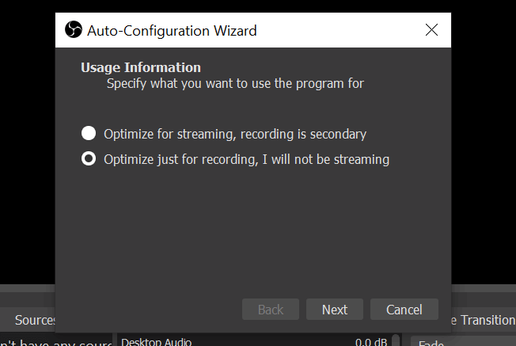

电脑屏幕录制及鼠标轨迹追踪

当你需要给别人进行演示的时候，你在电脑上的操作流程，可能由于距离或者颜色让观看者无法很好的看清楚。当你正在进行 Photoshop 教学的时候，你需要录制你的屏幕记录你的操作过程，以及再进行相关操作时能够清晰地注释出点击方式。
如果你有遇到以上场景，这篇教程就能够帮助到你。
屏幕录制
屏幕录制我使用的是 OBS Studio，一款开源的视频录制及流媒体传输的软件，支持 Windows macOS Linux。
官网：https://obsproject.com/
GitHub 主页：https://github.com/obsproject/obs-studio/wiki/Sources-Guide
在官网下载最新版并安装，然后运行 OBS。
第一次启动会有几个设置项，首先根据提示选择自动配置或手动配置，选择自动识别硬件并配置。
然后选择要进行流媒体传输还是只进行视频录制，我选择只视频录制：

设置录制分辨率及刷新率，默认即可：
主界面如下，默认没有设置视频源输入，所以背景为黑色：
界面中间为当前监听的视频源预览，界面下方有 5 个区域 senses，sources，audio mixer，senses transitions，control。
senses
可以创建多个 sense，每个 sense 都有单独的 sources 设置，可以通过切换 sense 快速切换不同的 sources。
sources
source 就是添加监听源，点击下方加号可以添加 source：
可以添加多种不同的 source，如：音频，窗口，应用，监视器等，如果录制某个打开的应用窗口，点击 Windows capture：
可以起个名字点击 ok：
Windows 菜单下会列出当前打开的窗口，选择需要的即可：
有时候我们需要录制的内容要在多个窗口下切换，这时候可以录制整个监视器，选择 display capture：
这时就会录制当前屏幕显示的内容了：
如果选择 display capture 后显示的是黑屏，需要设置 app 的 graphic setting，搜索并打开 graphic setting：
点击 browse 找到 OBS 主程序：
点击 option 选择 power saving：
重新启动 OBS 应该就可以捕获到监视器了。
官方对此的解释：https://obsproject.com/forum/threads/laptop-black-screen-when-capturing-read-here-first.5965/
audio mixer
默认会捕获输入输出的 audio，可以调节滑块了控制音量大小或者屏蔽某个音频。
sense transitions
当建立了多个 sense 时，可以设定在 sense 间切换时的过渡延时时间，时间越长过渡越慢。
control

我常用的就是 start recoding。可以设置快捷键来录制，点击 settings- hotkeys，在 start recoding 右侧设置快捷键，我设置的是 ctrl shift 9，stop recoding 默认也会使用这个快捷键：
开始录制
设置好 sense，source，audio 就可以开始录制了，点击 start recoding 或者快捷键开始录制，然后点击 stop recoding 结束录制，默认保存路径是用户目录下的 videos 文件夹，默认格式是 MKV。
如果需要 mp4 格式，可以使用内置的 remux reroders 来转码，点击 file - remux recoders：
在左侧输入录制的 MKV 文件，右侧就是要转码的 mp4 文件路径，点击 remux 即可。
鼠标轨迹追踪
使用 OBS 录制的视频默认会有鼠标，想要更多的功能，如：局部放大，聚光灯效果，轨迹绘制，按键提示等就需要其他 app 了。
我这里使用的是 SwordSoft Mousetrack，可以实现这些功能，但是只支持 Windows。
除了屏幕录制时使用，在给别人进行演示或者做报告的时候，使用 SwordSoft Mousetrack 也是很好的选择。
官网：http://www.swordsoft.idv.tw/mousetrack/
SwordSoft Mousetrack is a useful tool for presentations or demos. It can puts a spotlight on the area around the mouse pointer, show animation effect when you click your mouse and displays your keystrokes on the screen.
SwordSoft Mousetrack 可以免费使用，但是如果想要保存设置项，就需要付费买授权了。下面介绍他的几个功能。
聚光灯效果
general 选项卡，在 show spotlight 前打勾，就开启了聚光灯模式，鼠标周围区域高亮，其他区域变暗：
可以设置圆圈半径轮廓颜色，不透明度等。在 spotlight 选项卡进行设置：
live draw
live draw 就是在当前屏幕用鼠标进行画线，在 show livedraw 前打勾即可激活：
默认会有一行提示信息，可以使用鼠标进行绘制了：
按 esc 退出 livedraw。在 livedraw 选项卡进行线条粗细/透明度/颜色的设置：
zoom
zoom 可以放大鼠标局部区域，在 show livezoom 前打勾即可激活：
激活后，在鼠标附近或有当前区域放大图：
在 zoom 选项卡可以进行放大倍率/放大区域宽高等设置项。
mouse click
点击鼠标位置效果，在 show mouse click 前打勾激活，当点击鼠标时，当前位置会显示一个动态效果：
默认显示一个红色圆环，需要设定其他效果，可以到 mouse click 选项卡设置。
keystroke
在 show keystroke 前打勾激活。再按下键盘上的任意键后，会在屏幕下方提示栏显示按下的键：
在 keystroke 选项卡可以设置提示栏位置/大小/透明度/颜色等信息。
快捷键
每次需要使用什么功能可以在 general 进行选择，也可以为每个功能设置快捷键，这样就可以快速的激活/关闭相关功能了。
在 general 选项卡，每个功能右侧都可以定义快捷键，我设置的快捷键如下：
设置好后只需要按下 ctrl shift 1 即可激活 聚光灯效果。
截屏
有时我们需要截取当前屏幕，并做一些标注。Windows 10 和 macOS 都有原生工具可供使用。
macOS：
shift command 3 截取全屏
shift command 4 截取部分区域
截屏后会在右下角显示预览，点击后可进行编辑。或者截屏会自动存储在桌面。
Windows 10：
shift win S 截屏
总结
使用 OBS 和 SwordSoft Mousetrack 可以很好的实现屏幕录制效果。先打开 SwordSoft Mousetrack 然后打开 OBS 开始录制即可。免费版的 SwordSoft Mousetrack，不能保存设置，重新启动后所有设置会恢复默认。默认激活的功能是 mouse click 和 keystroke。
标签：无